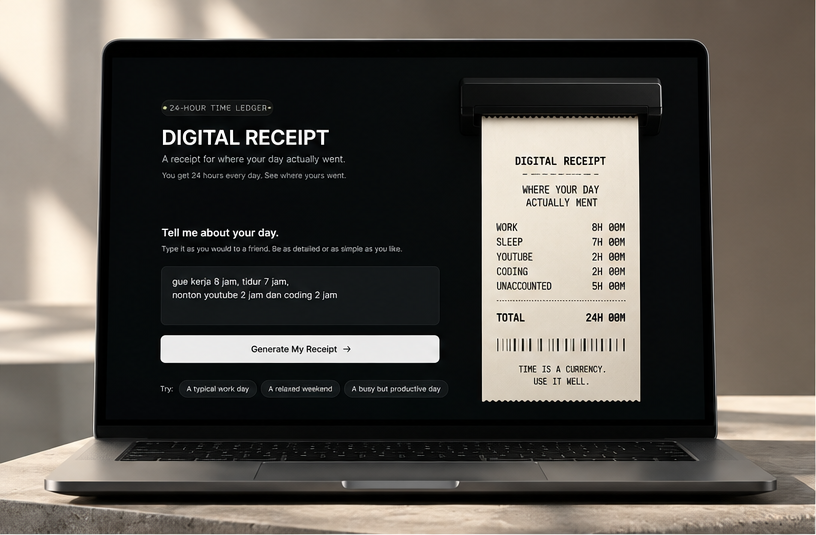
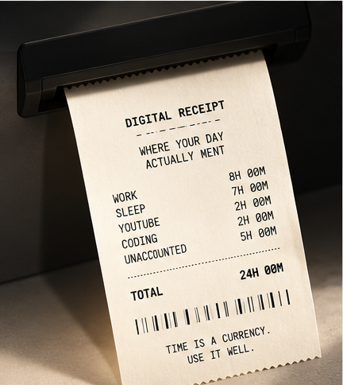
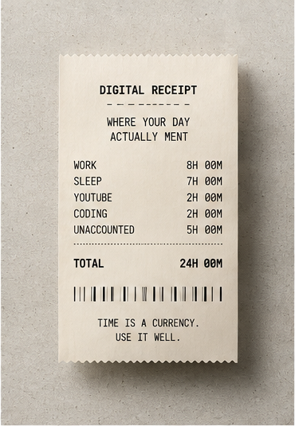
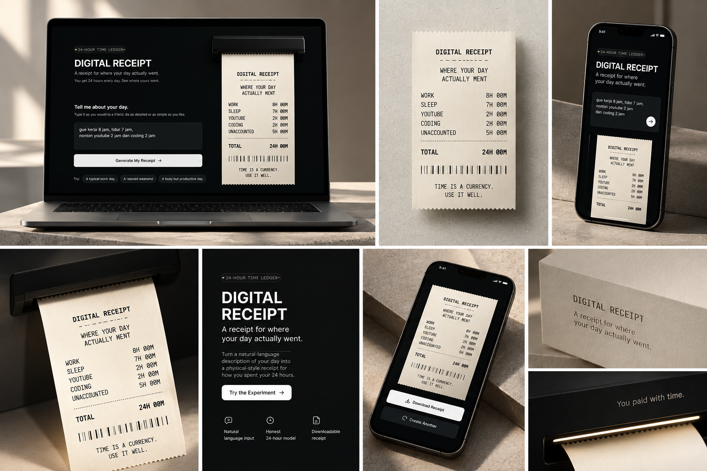

DIGITAL RECEIPT
A receipt for where your day actually went.
A focused one-hour creative product experiment that turns a natural-language description of your day into a physical-style receipt for how you spent your time.

YOU GET 24 HOURS.
WHERE DID THEY GO?
Every day gives us the same 24-hour budget, but we rarely experience time as something we've actually spent. Digital Receipt turns that invisible transaction into a tangible object.
Time is an irreversible daily expenditure. When activities are treated like line items on a sales receipt, unconscious trade-offs become concrete reality.
NATURAL RECALL OVER TIME-TRACKING
Users describe their day as they naturally remember it rather than filling out an intimidating spreadsheet.
The parser supports casual Indonesian and English colloquialisms (including sejam, setengah jam, shorthand 8j). The MVP intentionally uses pragmatic, deterministic local parsing rather than unpredictable external AI APIs.
FOUR DECISIONS SHAPED THE PRODUCT.
01 — Natural language over forms
Remembering a day should feel conversational, not like filling out a spreadsheet.
02 — Unaccounted, never invented
Missing hours remain UNACCOUNTED instead of being guessed or fabricated to reach 24 hours.
03 — Reflection, not judgment
The system reveals observational patterns (e.g. creating vs. consuming) without assigning patronizing productivity scores.
04 — Receipt over dashboard
Time already spent becomes a physical artifact rather than another analytics interface.
THERMAL TRUTH
80% Thermal Truth balanced with 20% Personal Audit clarity. Tactile warm paper (#EEE9DE), authentic monospace typography, and measured mechanical feedback as the receipt feeds downward from the slot.


ONE HOUR. ONE INTERACTION. ONE FINISHED PRODUCT.
The project intentionally started with a strict one-hour MVP constraint to force ruthless prioritization around a single end-to-end loop.
Strict boundary enforced from minute zero.

A SMALL PRODUCT.
FINISHED ON PURPOSE.
Digital Receipt wasn’t designed to become a bloated productivity suite. The goal was to find one strong metaphor, turn it into a coherent physical-digital interaction, and ship the complete experience.